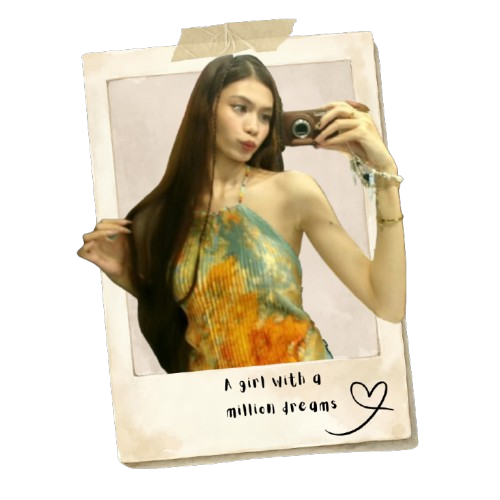
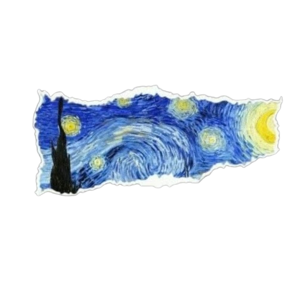
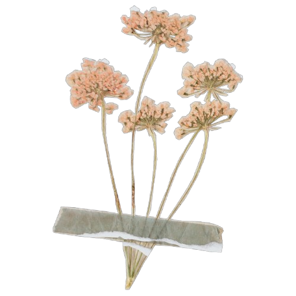
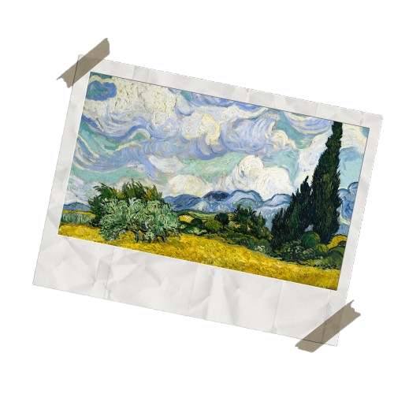
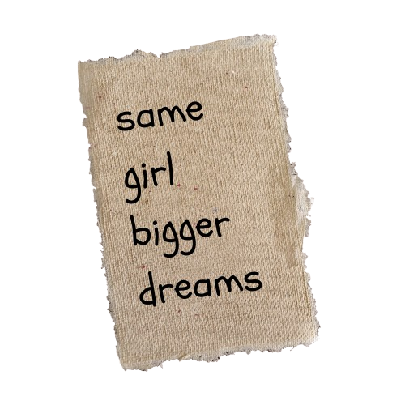
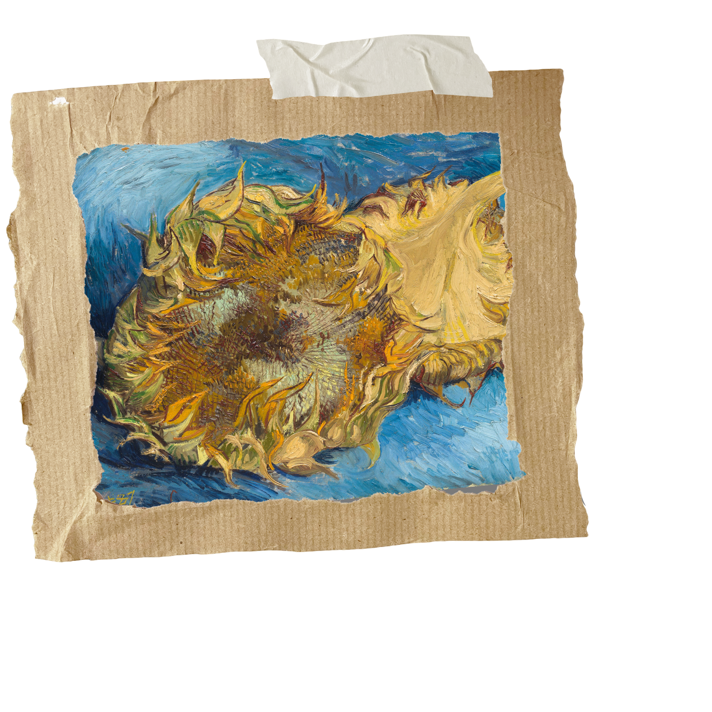
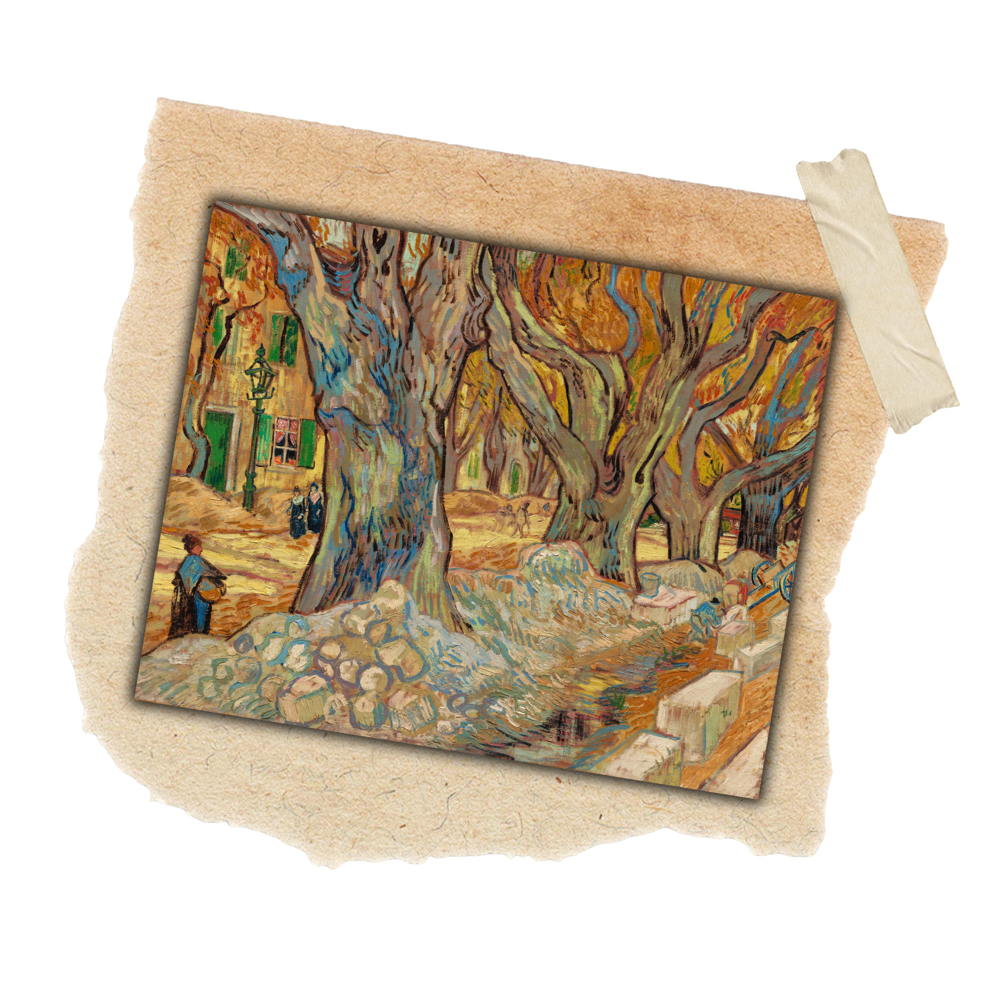
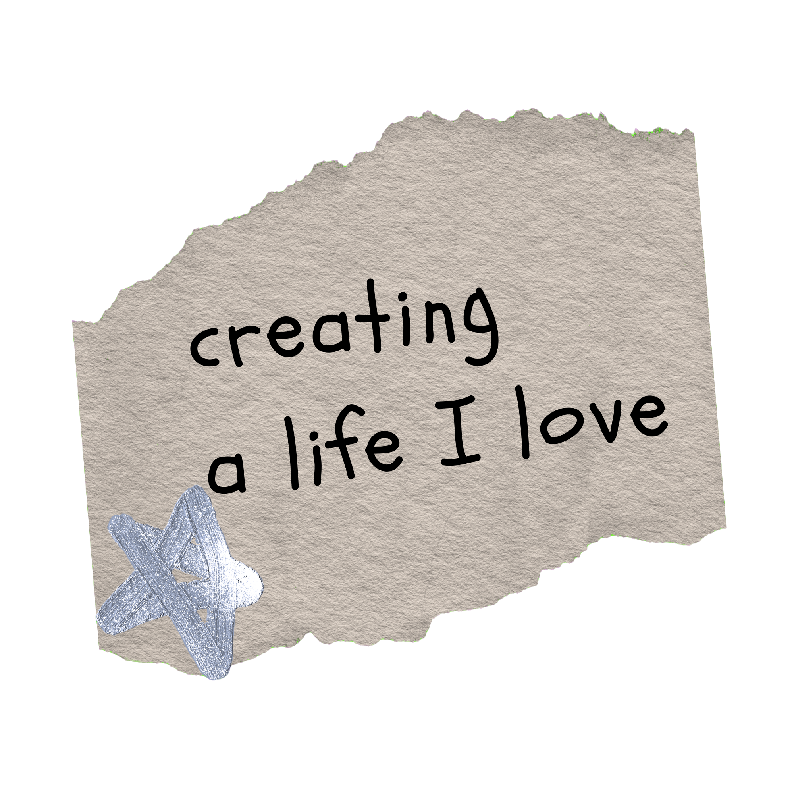
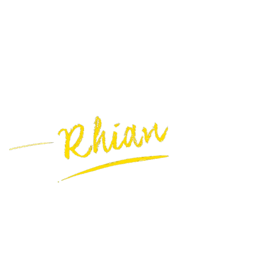

Hi, I am Rhian Angel! I’m a creative and passionate
individual who loves expressing ideas through art and design.
I enjoy exploring colors, creativity, and new ways to
bring ideas to life. As an aspiring front-end web
developer, I’m passionate about combining my love
for art with technology to create beautiful,
engaging, and meaningful digital experiences.
I enjoy exploring different forms of creativity
and self-expression. My interests include
modeling, art, reading books, and web design,
where I can express my ideas, discover
new perspectives, and create something
meaningful.










